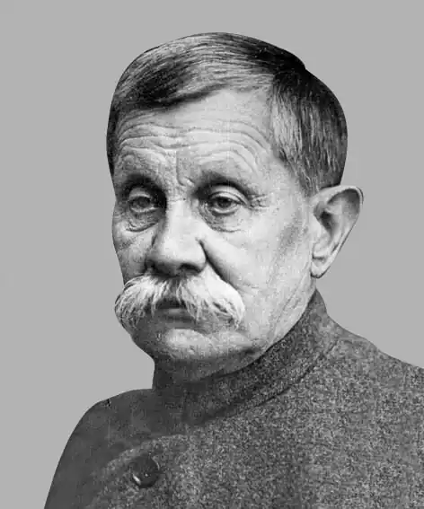

Жарко Яків Васильович (13.11.1861 – 25.05.1933), український письменник, актор, громадсько-політичний діяч.
Народився у м. Полтава в родині колезького асесора, в якій панував культ книг, музики і театрального мистецтва. Ще в гімназії став на революційний шлях, що й стало причиною виключення. Неодноразово затримувався та арештовувався. Закінчив земську фельдшерську школу. Перша збірка віршів просякнута любов’ю до України ("Перші ліричні твори", 1884). У 1886 – 1896 рр. – актор театральних груп М. Старицького, М. Кропивницького і П. Саксаганського. Друга збірка віршів ("Молодим. Пісні і думи", 1891) недопущена до друку цензурою. Публікувався в "Літературно-науковому віснику", редагованому І. Франком. В 1896 р. в Санкт-Петербурзі вийшла збірка його байок. Влітку 1903 р. переїжджає на Кубань, оселяється у Катеринодарі. Катеринодарський період – найплідніший у творчому відношенні: збірник "Пісні" (1905), "Байки" (1912), "Катеринодарцям" (1912), історичний нарис "На Кубані" (1912), "Балади і легенди" (1913), а також підбірки до антології "Українська муза" (1908) і до "Збірника українських байок" (1915). Ж. – один з організаторів і керівників катеринодарської "Просвіти" та катеринодарського відділення РУП.
У 1920-х рр. – на різних посадах у Кубанському художньому музеї. В 1929 р. у зв’язку з публікацією віршів "З єгипетського циклу" був заарештований за підозрою в шпигунстві на користь Великобританії. Арешти, обшуки і допити тривали до самої смерті. Зацькований переслідуваннями, помер. Похований на Всіхсвятському кладовищі м. Краснодар. Архів Жарко зберігається в Інституті літератури ім. Тараса Шевченка в Києві.